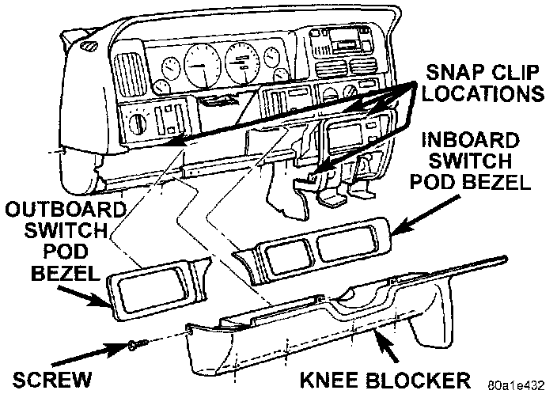

Knee Blocker Replacement
REMOVALWARNING: ON VEHICLES EQUIPPED WITH AIRBAGS, REFER TO AIR BAGS AND SEAT BELTS/AIR BAGS BEFORE ATTEMPTING STEERING WHEEL, STEERING COLUMN, OR INSTRUMENT PANEL COMPONENT DIAGNOSIS OR SERVICE. FAILURE TO TAKE THE PROPER PRECAUTIONS COULD RESULT IN ACCIDENTAL AIRBAG DEPLOYMENT AND POSSIBLE PERSONAL INJURY.
1. Disconnect and isolate the battery negative cable.
2. Remove both switch pod bezels as described.
Knee Blocker Remove/Install:

3. Remove one screw on each side of the steering column that secures the upper edge of the knee blocker/steering column cover to the instrument panel.
4. Remove the one screw that secures the outboard end of the knee blocker to the instrument panel.
5. Remove the four screws that secure the lower edge of the knee blocker to the lower instrument panel reinforcement.
6. Using a trim stick or other suitable wide flat bladed tool, gently pry the edges of the knee blocker away from the instrument panel at the snap clip retainer locations.
7. Remove the knee blocker/steering column cover from the vehicle.
8. Reverse the removal procedures to install.